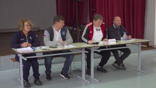

01
Политика и выборы · событие дня
Глава города Александр Болдакин доложил губернатору Алексею Русских о ходе восстановительных работ
По его словам, спецслужбы укрепляют повреждённые конструкции и разбирают завалы. Жителей сопровождают в квартиры, чтобы они могли забрать документы и необходимые вещи. По словам Болдакина, в ближайшие два дня планируют заменить повреждённые окна.…